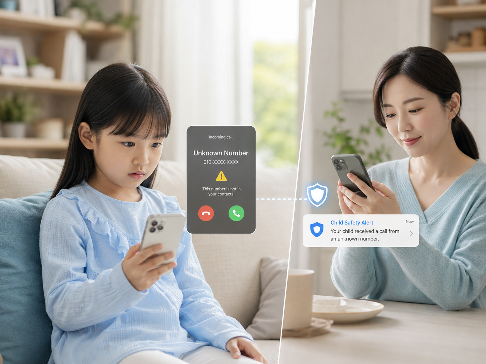
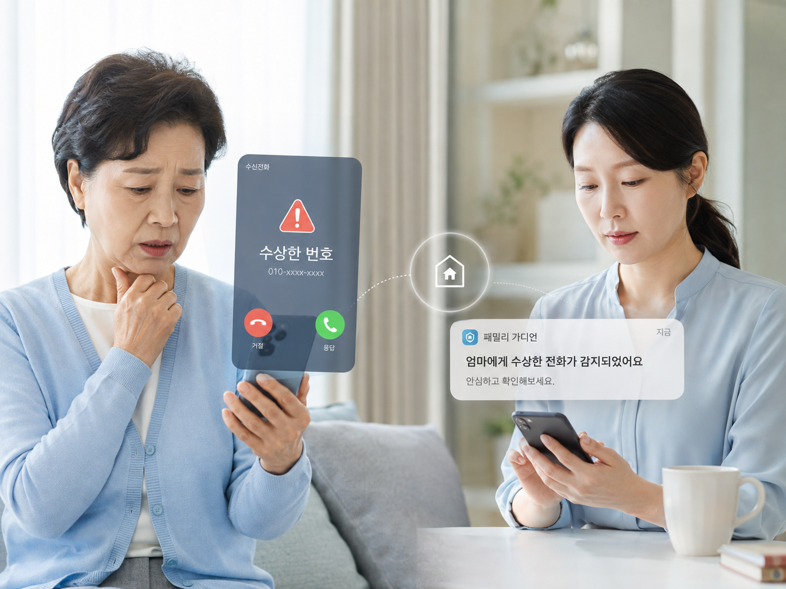

KIDS · UNKNOWN NUMBER
보호자 부재

모르는 번호가 아이에게 걸려왔을 때
위험·미등록 번호를 보호자가 알 수 있도록 먼저 신호를 보냅니다.
키즈·시니어에게 위험한 전화가 걸려오거나 통화 중 위험 신호가 감지되면 보호자에게 알리고, 필요한 순간에는 함께 개입할 수 있습니다.
보호 대상자의 통화를 확인하고 필요하면 함께 참여할 수 있습니다.
아이는 모르는 번호를 구분하기 어렵고, 시니어는 정상적인 기관 전화처럼 꾸민 사기 전화를 마주할 수 있습니다. 보호자가 뒤늦게 알게 되는 시간을 줄이는 것이 CALL X의 출발점입니다.

위험·미등록 번호를 보호자가 알 수 있도록 먼저 신호를 보냅니다.

위험 번호이거나 통화 중 보이스피싱 신호가 감지되면 보호자가 상황을 놓치지 않게 합니다.
모든 전화를 보호자가 감시하는 방식이 아니라, 위험 신호가 있는 순간에만 보호자에게 필요한 정보를 전달하는 방향입니다.
키즈·시니어에게 외부 전화가 수신됩니다.
미등록·위험 번호 또는 통화 중 위험 신호를 확인합니다.
지금 확인해야 하는 전화인지 보호자가 판단할 수 있게 합니다.
위험도가 높다면 보호자가 통화에 참여하는 시나리오까지 고려합니다.
최대 4개의 짧은 질문으로 어떤 가족에게, 어느 정도의 보호가 필요한지 확인하고 있습니다.
CALL X가 어떤 보호부터 시작해야 할지 판단하는 데 활용하겠습니다.
모르는 번호를 받기 전부터, 이미 시작된 통화에 보호자가 들어가는 순간까지 단계적으로 생각했습니다.
위험·미등록 번호의 수신 사실을 보호자에게 알려 아이가 혼자 판단해야 하는 상황을 줄입니다.
사기 가능성이 높은 전화의 수신을 보호자가 빠르게 인지하고 필요한 조치를 판단할 수 있게 합니다.
위험 신호를 보호자에게 알리고, 필요하다면 제3자로 통화에 참여하는 흐름까지 확장합니다.
CALL X는 모든 통화를 들여다보는 서비스가 아니라, 위험 가능성이 있는 순간에 보호자에게 필요한 신호를 전달하는 방향을 전제로 합니다.
보호자가 모든 전화를 실시간으로 확인해야 하는 구조보다, 확인이 필요한 순간을 선별하는 방향입니다.
단순 알림부터 보호자의 통화 참여까지 서로 다른 보호 수준으로 설계할 수 있습니다.
CALL X가 위험 가능성을 알려도, 실제 개입 여부는 사용자가 선택하는 구조를 기본으로 합니다.
CALL X가 어떤 가족과 어떤 상황부터 보호해야 할지, 1분 설문으로 의견을 남겨주세요.
설문 참여하기